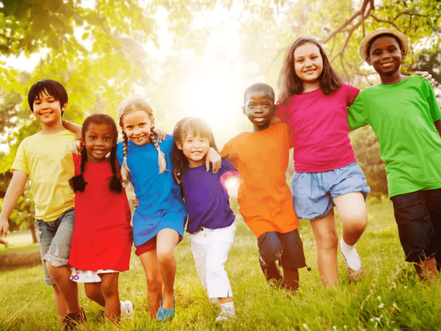

Sobre a ONG Menos Tela e Mais Diversão
Quem Somos
A ONG Menos Tela e Mais Diversão nasceu com o propósito de resgatar o tempo de qualidade das crianças longe das telas. Acreditamos que a infância deve ser vivida com brincadeiras, natureza, leitura e convivência. Promovemos experiências offline que fortalecem laços, estimulam a criatividade e promovem o desenvolvimento saudável.
Nossa História
Fundada em 2024, a Menos Tela e Mais Diversão surgiu do desejo de famílias e educadores em transformar o tempo das crianças em momentos de aprendizado e diversão fora das telas. Desde então, realizamos oficinas e eventos em comunidades e escolas, impactando positivamente mais de 1000 crianças em todo o estado de São Paulo.
Missão, Visão e Valores
Missão
Promover experiências offline que contribuam para o desenvolvimento saudável e criativo das crianças.
Visão
Ser referência nacional em ações que incentivem a redução do tempo de tela e o aumento das interações humanas reais.
Valores
- Respeito à infância
- Educação e convivência
- Colaboração comunitária
- Inclusão e diversidade
- Responsabilidade social
Nossa Equipe
- Letícia Geovú — Fundadora e Coordenadora de Projetos
- Mariana Lopes — Psicóloga Infantil
- João Almeida — Educador Físico e Facilitador de Oficinas
- Rafaela Dias — Coordenadora de Comunicação
Transparência
Prezamos pela responsabilidade e pela confiança dos nossos apoiadores. Em breve, publicaremos relatórios de atividades e prestação de contas com detalhes sobre o impacto dos nossos projetos. Nosso compromisso é manter uma atuação clara, ética e responsável.
Quer fazer parte dessa transformação?
Junte-se a nós como voluntário ou apoiador! Seu tempo e sua ajuda fazem a diferença.
Quero ser voluntário